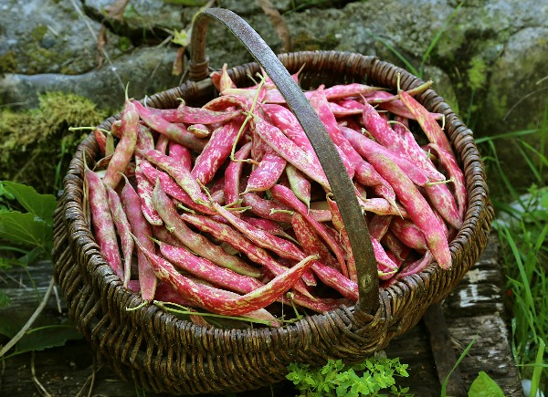

Beans
Best Beans Planting Practices: Beans are sensitive to cold temperatures and frost and should be planted around the average last frost date in the spring. The exact date depends a lot upon the condition of the soil — it must have warmed to 60°F and started to dry out. Seeds should be planted about one inch deep. Plant bush beans about two to three inches apart in rows two feet wide. Pole beans can be planted four to six inches apart in rows three feet wide. Alternatively, four to six seeds can be planted in hills centered about 30 inches apart. Plan to plant successive crops every two to four weeks for an extended harvest season (usually until late July in northern areas).The best sites have full sun (partial shade is tolerated but will reduce the yield), well-drained soil (but consistently moist), average fertility (too rich of a soil will produce an excess of foliage at the expense of beans), slightly acidic soil pH (6 to 6.8), and good air circulation.
Best Fertilizers for Beans Farms:The application of fertilizers After sowing by fertigation is important in order to increase the availability of nutrients. It is important to include nitrate fertilizer relatively frequently (with every irrigation cycle) until well-developed foliage has been built up. Potassium should be applied in increased amounts while pods are starting their intensive development. K/N ratio should preferably be 3/1. Multi-K is absolutely essential at this stage as sole K source because it is fully water soluble and chloride-free. Potassium nitrate is fully consumed by the plants and thus, no salts will accumulate in the soil. This is therefore, the only way to avoid salinity, to which this crop is extremely sensitive. Multi-K is advantageous also due to the K/N ratio of 3/1 found in it.
Pest management for Beans: Look for clusters of yellow eggs hanging vertically from the underside of the snap or lima bean leaves (they also like soybeans and other types, too) in early summer. Soon fuzzy, bright yellow insects will appear and start feeding on bean leaves — these are the Mexican bean beetle larvae, which are very destructive as they skeletonize the leaves. The adult does less damage and looks like a yellow-orange ladybug with eight black spots in rows on each wing. The adult is a good flyer and can travel far to find new bean fields. The beetles overwinter in moist, protected debris. Control measures include cultivating to destroy overwintering locations; handpicking eggs, larvae or adults; using floating row covers; planting a heavy bean crop in the spring (beetle populations are heaviest later in the summer); using a trap crop; using predators; spraying with azadirachtin, garlic, cedar oil, or mineral oil; and planting less-preferred types like mung beans, cowpea, and soybeans. This is one of the top insect pests in many areas.
Harvesting and Storage techniques for Beans: The best time to pick the various snap beans is when they are still young and aren’t tough and stringy (July to frost). Since beans ripen at different times on the same bush, it is best to check them daily. Picking the beans frequently encourages more to form. Skipping a day may send some pods into the inedible category and slow down production since the plant thinks it has accomplished its goal of producing seed. Most beans should snap nicely from the plant. Select beans that are firm, pencil thickness (or less), tender, and medium green. Harvest only when bean plants are dry to avoid bacterial blight, a serious bean disease. Cut off the tougher stem and tip end and they are ready for cooking (or eating fresh). Store pods unwashed in a tight container in the refrigerator, then wash and use as soon as possible. After several days beans may get wilty or tough. If they can’t be used fresh within three or four days, the pods can be blanched and frozen, canned, or pickled.